O Objetivo do Jogo:
O vôlei é um esporte de não-contacto onde o objetivo é fazer a bola tocar o chão da quadra adversária ou fazer o outro time errar. Cada equipe pode dar no máximo 3 toques na bola antes de mandá-la para o outro lado. Um mesmo jogador não pode dar dois toques seguidos na bola. O bloqueio na rede não conta como um dos 3 toques do time.
Os Movimentos Básicos (Fundamentos):
Para quem está começando, focar nesses três movimentos já garante um bom jogo: 🏐 Manchete Usada principalmente para receber o saque ou defender ataques. Como fazer: Junte as mãos (uma sobre a outra), estique bem os braços e aperte os cotovelos para dentro. A bola deve bater na parte interna dos antebraços, nunca nas mãos ou nos punhos. 🏐 Toque Usado principalmente para levantar a bola para um colega atacar. Como fazer: Abra os dedos formando uma "concha" no formato da bola, acima da linha da testa. Use as pontas dos dedos (não a palma da mão) e flexione ligeiramente os cotovelos e joelhos para dar impulso. 🏐 Saque por Baixo O jeito mais fácil e seguro de colocar a bola em jogo quando se é iniciante. Como fazer: Segure a bola na altura da cintura com uma mão e use o outro braço (esticado e com o pugno fechado) num movimento de balanço de trás para frente para bater na parte inferior da bola..